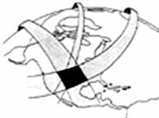

|
Secretary of Defense William Cohen at an April 1997 counterterrorism conference sponsored by former Senator Sam Nunn. Quoted from DoD News Briefing, Secretary of Defense William S. Cohen, Q&A at the Conference on Terrorism, Weapons of Mass Destruction, and U.S. Strategy, University of Georgia, Athens, Apr. 28, 1997. |
North America has not had "normal" weather
since July 1976, 
and we are likely never to have "normal" weather again.
| Cloud Anomalies Note that the edges of the weather control patterns in the clouds are now deliberately "roughed up" to make them appear more "normal". Note also that most of these patterns were relatively stable in wind-blown skies, and were not fleeting aberrations. When the power was cut, they would dissipate almost immediately. Also, there may well be several different man-made phenomena going on with the creation of these "clouds" and "chemtrails", possibly involving different covert groups, different nations, and different programs and agendas, so one single simple interpretation is probably not appropriate. Candidates for the foregoing would probably also include the alleged Global Sunscreen Program and HAARP. A final caveat - some of these patterns may indeed by natural phenomena. All photographed in the Santa Barbara, California area by Tony Craddock unless otherwise noted. Some photos enhanced slightly for contrast. |
|
2004
2002
|